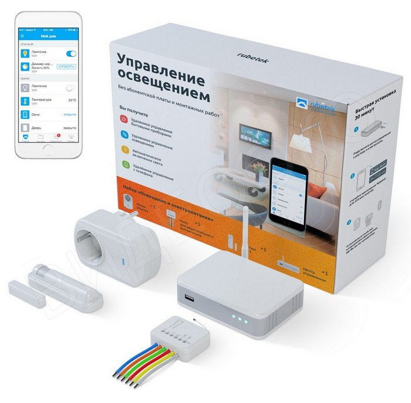
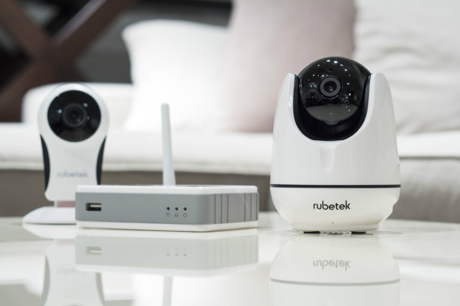

На рынке беспроводных систем домашней автоматизации заметно выделяется решение российской компании Rubetek. Разработанная инновационная система максимально совместима с устройствами других производителей.
Мобильное приложение Rubetek легко объединяет «умные» устройства и создает сценарии. Удобный, красивый и понятный для пользователя графический интерфейс превратит использование приложения в интересный и увлекательный процесс. Доступные цены, простая установка, не требующая ремонта в помещении и удобное использование.
Возможности
На сегодняшний день система «умного дома» Rubetek — это единый центр, который позволяет управлять всеми устройствами в доме, а также полностью совместим с устройствами более 300 сторонних производителей подобных комплексов. Контроль осуществляется с помощью бесплатного мобильного приложения.

Функциональные элементы
В арсенале производителя имеется несколько групп устройств, позволяющих эффективно следить за состоянием вашего дома и своевременно предотвращать возникновение возможных неприятных ситуаций.
В зависимости от комплектации система может:
•управлять освещением;
•управлять приводами;
•поддерживать необходимую температуру в доме;
•управлять вентиляцией;
•управлять мультирумом;
•управлять камерами видеонаблюдения;
•оснащаться охранно-пожарной сигнализацией;
•оснащаться системой контроля доступа;
•оснащаться сервером домашней автоматизации;
к
•контролировать нагрузки и выявлять аварии;
•управлять инженерными коммуникациями.

Преимущества:
•локализованное устройство;
•бесплатная техническая поддержка и обновление устройств;
•бесплатные SMS - уведомления;
•легкий монтаж;
•беспроводная коммуникация;
•имеется оповещение о разряде батареи в датчиках;
•возможность доукомплектовать систему иными датчиками.
Недостатки:
•зависимость от интернета и электроснабжения для полноценной работы;
•датчик открытия не всегда возможно установить с максимально допустимой дистанцией в 1 см между передатчиком и магнитом.